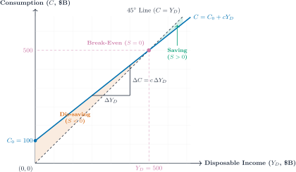
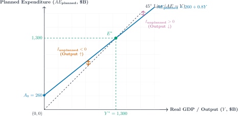
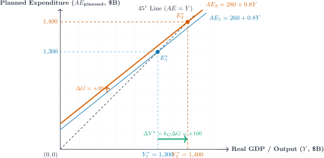
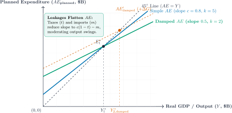

8 Chapter 8: Income, Expenditure, and the Keynesian Cross
This chapter develops the short-run income–expenditure model (the Keynesian cross), benchmarked to Krugman and Wells. It derives the aggregate consumption and saving functions, distinguishes planned investment from unplanned inventory accumulation, solves for short-run macroeconomic equilibrium where output equals planned aggregate expenditure (\(Y = AE_{\text{planned}}\)), and quantifies the autonomous spending, lump-sum tax, balanced-budget, and leakage-damped multipliers.
8.1 Learning Outcomes, Key Terms, and Core Dilemma
Learning Outcomes
After completing this chapter, students should be able to:
- Construct the aggregate consumption function (\(C = C_0 + cY_D\)) and saving schedule (\(S = -C_0 + (1-c)Y_D\)), and relate the marginal propensity to consume (\(MPC\)) to the marginal propensity to save (\(MPS\)).
- Distinguish planned investment spending (\(I_{\text{planned}}\)) from unplanned inventory investment (\(I_{\text{unplanned}}\)) and explain how inventory adjustments drive short-run output toward equilibrium.
- Identify short-run macroeconomic equilibrium on a 45-degree Keynesian cross diagram (\(Y^* = AE_{\text{planned}}\)) and solve for \(Y^*\) algebraically.
- Calculate and compare the autonomous spending multiplier (\(k_G\)), the lump-sum tax multiplier (\(k_T\)), and the balanced-budget multiplier (\(k_{BB}\)).
- Explain how proportional income taxes (\(t\)), marginal propensity to import (\(m\)), price-level changes, and interest-rate crowding out dampen the real-world multiplier.
Curriculum Alignment: Supports Course Learning Objectives MA-3 and C2002-2.
Key Terms
Autonomous consumption (\(C_0\)), disposable income (\(Y_D\)), marginal propensity to consume (\(MPC\)), marginal propensity to save (\(MPS\)), planned investment spending (\(I_{\text{planned}}\)), unplanned inventory investment (\(I_{\text{unplanned}}\)), planned aggregate expenditure (\(AE_{\text{planned}}\)), Keynesian cross, autonomous spending multiplier (\(k_G\)), lump-sum tax multiplier (\(k_T\)), balanced-budget multiplier (\(k_{BB}\)), and automatic stabilizers.
During an economic downturn, policymakers routinely debate two competing stimulus designs: direct government purchases of goods and infrastructure (\(\Delta G > 0\)) versus lump-sum tax rebates sent directly to households (\(\Delta T < 0\)). Because one person’s spending becomes another person’s income, an initial injection of spending triggers multiple rounds of induced household consumption. Yet households save part of any tax rebate rather than spending every dollar immediately, and leakages into taxes and imports shrink each successive round. By the end of this chapter, you will be able to prove algebraically and graphically why a $1 increase in government purchases raises equilibrium GDP by more than a $1 tax cut, and why a balanced-budget expansion (\(\Delta G = \Delta T\)) still expands short-run output.
8.2 The Consumption Function, Saving Schedule, and Planned Investment
Conceptual Introduction
Consumer spending (\(C\)) accounts for roughly two-thirds of total U.S. Gross Domestic Product, making household spending behavior the primary engine of short-run aggregate expenditure. Economists model aggregate consumption as a function of disposable income (\(Y_D = Y - T\)), the income households retain after paying net taxes (\(T\), defined as taxes minus government transfer payments). Even if a household’s current disposable income dropped to zero, it would still need to buy food, shelter, and utilities by drawing down past savings or borrowing; this baseline spending independent of current income is called autonomous consumption (\(C_0 > 0\)).
As disposable income rises, households increase their consumption, but by less than dollar-for-dollar because they allocate part of each additional dollar to saving. The fraction of an additional dollar of disposable income that households spend on consumption is the marginal propensity to consume (\(MPC = \Delta C / \Delta Y_D\)), while the fraction saved is the marginal propensity to save (\(MPS = \Delta S / \Delta Y_D\)). Because every extra dollar of disposable income must be either consumed or saved (\(\Delta Y_D = \Delta C + \Delta S\)), the two marginal propensities always sum to one: \(MPC + MPS = 1\).
Unlike consumer spending, which rises systematically with current disposable income, planned investment spending (\(I_{\text{planned}}\))—firms’ intended purchases of new machinery, commercial structures, software, and planned inventory additions—depends primarily on expected future profitability, capacity utilization, and the real interest rate. In the baseline Keynesian cross model, we treat planned investment (\(I_{\text{planned}}\)), government purchases (\(G\)), lump-sum taxes (\(T\)), and net exports (\(NX\)) as exogenous (autonomous) variables in the short run, allowing us to isolate how income-induced consumption drives macroeconomic equilibrium.
Visual Representation: The Aggregate Consumption Function
Figure 1 plots aggregate consumption (\(C\)) on the vertical axis against disposable income (\(Y_D\)) on the horizontal axis. The dashed \(45^\circ\) line represents all points where consumption equals disposable income (\(C = Y_D\), meaning household saving is zero).

Y_D and households dis-save (S < 0); to the right, Y_D > C and household saving is positive (S = Y_D - C > 0).">Real-World Application: U.S. Disposable Income and Pandemic Stimulus Saving
Empirical data from the Bureau of Economic Analysis (BEA) illustrate both the stability of the consumption function in normal times and how temporary shocks shift saving behavior. In 2020 and 2021, federal fiscal relief programs boosted real disposable personal income (FRED: ) while pandemic lockdowns restricted spending on in-person services. As a result, the U.S. personal saving rate (FRED: ) surged from roughly 7% in late 2019 to over 30% in April 2020, building more than $2 trillion in excess household savings. Once restrictions lifted in 2022–2024, households drew down those buffers, keeping real personal consumption expenditures (FRED: ) resilient even as interest rates rose.
Mathematical Foundation: Consumption and Saving Equations
Assuming a linear behavioral relationship, the aggregate consumption and saving functions are written as: \[\begin{align} C &= C_0 + c\,Y_D = C_0 + c(Y - T), \qquad 0 < c < 1, \label{eq:ch8-consumption} \\ S_{\text{private}} &= Y_D - C = Y_D - \bigl(C_0 + c\,Y_D\bigr) = -C_0 + (1 - c)Y_D, \label{eq:ch8-saving} \end{align}\] where \(c = MPC\) is the marginal propensity to consume and \(s = 1 - c = MPS\) is the marginal propensity to save.
Suppose aggregate autonomous consumption is \(C_0 = \$100\text{ billion}\) and households spend \(80\%\) of each additional dollar of disposable income (\(c = MPC = 0.80\)).
- Marginal Propensity to Save: \(MPS = 1 - MPC = 1 - 0.80 = 0.20\).
- Consumption and Saving Functions:
\[ C = 100 + 0.80\,Y_D, \qquad S_{\text{private}} = -100 + 0.20\,Y_D. \]
- Break-Even Disposable Income (\(S_{\text{private}} = 0\)): Set \(C = Y_D\):
\[ Y_D = 100 + 0.80\,Y_D \implies 0.20\,Y_D = 100 \implies Y_D^{\text{break-even}} = \$500\text{ billion}. \]
- Evaluation at \(Y_D = \$1{,}250\text{ billion}\):
\[ C = 100 + 0.80(1{,}250) = 100 + 1{,}000 = \$1{,}100\text{ billion}, \qquad S_{\text{private}} = 1{,}250 - 1{,}100 = \$150\text{ billion}. \]
For an individual household, increasing saving by cutting spending builds personal wealth. In a recessionary economy with sticky prices, however, if all households simultaneously try to save more by reducing autonomous consumption (\(C_0 \downarrow\)), aggregate expenditure falls, firms cut production, and national income (\(Y\)) contracts. Because saving also depends on income (\(S = -C_0 + sY_D\)), the resulting drop in \(Y\) can leave aggregate saving unchanged or even lower—a macroeconomic coordination failure John Maynard Keynes termed the paradox of thrift.
8.3 Planned Aggregate Expenditure and the 45-Degree Keynesian Cross
Conceptual Introduction
In the short run, many firms face menu costs, multi-quarter wage contracts, and sticky catalog prices. Rather than immediately slashing prices whenever weekly sales dip, firms adjust production quantities and manage buffer stocks of goods. Planned aggregate expenditure (\(AE_{\text{planned}}\)) is the total amount of spending that households, firms, the government, and foreign buyers plan to make on domestically produced final goods and services:
\[ AE_{\text{planned}} = C + I_{\text{planned}} + G + NX. \]
Because firms produce output (\(Y\)) before knowing exact customer demand, actual total investment (\(I\)) equals planned investment plus unplanned inventory investment (\(I_{\text{unplanned}}\)):
\[ Y = C + I + G + NX = C + \bigl(I_{\text{planned}} + I_{\text{unplanned}}\bigr) + G + NX = AE_{\text{planned}} + I_{\text{unplanned}}. \]
Rearranging this national accounting identity yields the fundamental adjustment law of the Keynesian cross:
\[ I_{\text{unplanned}} = Y - AE_{\text{planned}}. \]
When real GDP exceeds planned spending (\(Y > AE_{\text{planned}}\)), unsold goods pile up in warehouses (\(I_{\text{unplanned}} > 0\)), prompting firms to cut factory orders and lay off workers until output falls back to \(Y^*\). Conversely, when planned spending exceeds current production (\(Y < AE_{\text{planned}}\)), shelves empty faster than anticipated (\(I_{\text{unplanned}} < 0\)), motivating firms to expand production and hire workers. Short-run macroeconomic equilibrium occurs exclusively at \(Y^*\), where actual output equals planned aggregate expenditure and unplanned inventory investment is zero (\(I_{\text{unplanned}} = 0\)).
Visual Representation: The 45-Degree Keynesian Cross
Figure 2 illustrates short-run equilibrium using the Keynesian cross. The \(45^\circ\) reference line maps all points where output equals planned expenditure (\(AE = Y\)), while the upward-sloping \(AE_{\text{planned}}\) line starts at autonomous expenditure \(A_0\) and rises with slope \(MPC\).

Y causes unplanned inventory depletion (I_{\text{unplanned}} < 0), inducing firms to expand production; above Y^*, Y > AE_{\text{planned}} causes unplanned inventory accumulation (I_{\text{unplanned}} > 0), inducing output cuts.">Real-World Application: Retail Inventory Overhangs and Production Adjustments
The inventory-adjustment mechanism is directly observable in quarterly National Income and Product Accounts (NIPA). Following supply-chain bottlenecks in 2021, major U.S. retailers over-ordered merchandise just as consumer demand rotated from physical goods back toward travel and dining. By mid-2022, bloated warehouse stocks—tracked in FRED series (Change in Private Inventories) alongside real GDP ()—forced retailers to slash new factory orders and discount existing stock. That inventory correction temporarily dragged down U.S. manufacturing output until inventory-to-sales ratios returned to equilibrium.
Mathematical Foundation: Solving for Equilibrium Output (\(Y^*\))
Substitute the behavioral consumption function \(C = C_0 + c(Y - T)\) and exogenous spending components (\(I_{\text{planned}}, G, NX\)) into \(AE_{\text{planned}}\):
\[ AE_{\text{planned}} = \underbrace{\bigl(C_0 - c\,T + I_{\text{planned}} + G + NX\bigr)}_{\text{Autonomous Expenditure } (A_0)} + c\,Y = A_0 + c\,Y. \]
Setting \(Y = AE_{\text{planned}}\) and solving for equilibrium output \(Y^*\): \[\begin{align} Y^* &= A_0 + c\,Y^* \nonumber \\ (1 - c)Y^* &= A_0 \nonumber \\ Y^* &= \frac{1}{1 - c}\,A_0 = \frac{1}{1 - c}\bigl(C_0 - c\,T + I_{\text{planned}} + G + NX\bigr). \label{eq:ch8-equilibrium} \end{align}\]
Suppose a closed economy (\(NX = 0\)) has parameters in billions of dollars: \(C_0 = 100\), \(c = 0.8\), \(T = 50\), \(I_{\text{planned}} = 120\), and \(G = 80\).
- Construct Planned Aggregate Expenditure:
\[ AE_{\text{planned}} = 100 + 0.8(Y - 50) + 120 + 80 = 100 + 0.8Y - 40 + 200 = 260 + 0.8Y. \]
Here, autonomous aggregate expenditure is \(A_0 = \$260\text{ billion}\). * Solve for Short-Run Equilibrium Output (\(Y^*\)):
\[ Y^* = 260 + 0.8Y^* \implies 0.2Y^* = 260 \implies Y^* = \frac{260}{0.2} = \$1{,}300\text{ billion}. \]
- Verify Inventory Adjustment Across Output Levels:
8.4 The Autonomous Spending, Lump-Sum Tax, and Balanced-Budget Multipliers
Conceptual Introduction
When any component of autonomous expenditure (\(C_0\), \(I_{\text{planned}}\), \(G\), or \(NX\)) rises by \(\Delta A_0\), equilibrium real GDP increases by a multiple of that initial shock. Suppose the government purchases \(\Delta G = \$20\text{ billion}\) in new transit equipment. In Round 1, transit workers and suppliers earn \(\$20\text{ billion}\) in new income (\(\Delta Y_1 = \$20\text{ billion}\)). With \(MPC = 0.8\), those workers spend \(0.8 \times \$20\text{ billion} = \$16\text{ billion}\) on groceries, housing, and services in Round 2, generating \(\$16\text{ billion}\) of income for a second wave of producers, who in turn spend \(0.8 \times \$16\text{ billion} = \$12.8\text{ billion}\) in Round 3, and so on.
By contrast, consider a lump-sum tax cut of \(\Delta T = -\$20\text{ billion}\). In Round 1, government purchases do not rise directly; instead, households receive \(\$20\text{ billion}\) in extra disposable income. Because households save \(20\%\) (\(MPS = 0.2\)) and spend only \(80\%\) (\(MPC = 0.8\)), first-round aggregate expenditure rises by only \(-MPC \times \Delta T = -0.8(-\$20\text{ billion}) = +\$16\text{ billion}\) rather than \(+\$20\text{ billion}\). Consequently, the lump-sum tax multiplier (\(k_T\)) is smaller in absolute magnitude than the autonomous spending multiplier (\(k_G\)).
This asymmetry produces a remarkable corollary: if the government increases purchases by \(\Delta G = +\$20\text{ billion}\) and simultaneously finances the entire expenditure by raising lump-sum taxes by \(\Delta T = +\$20\text{ billion}\) (leaving the budget deficit unchanged), aggregate expenditure still increases on net. The \(+\$20\text{ billion}\) direct injection from \(\Delta G\) outweighs the \(-\$16\text{ billion}\) first-round consumption reduction from \(\Delta T\), yielding a net expansion of \(\Delta Y^* = +\$20\text{ billion}\)—meaning the balanced-budget multiplier (\(k_{BB}\)) equals exactly \(1.0\) in the baseline lump-sum tax model.
Visual Representation: Multiplier Shift in the Keynesian Cross
Figure 3 shows how an autonomous spending increase of \(\Delta G = \$20\text{ billion}\) shifts the \(AE_{\text{planned}}\) schedule vertically upward from \(AE_1 = 260 + 0.8Y\) to \(AE_2 = 280 + 0.8Y\), moving equilibrium along the \(45^\circ\) line from \(E_1^*\) (\(Y_1^* = \$1{,}300\text{ billion}\)) to \(E_2^*\) (\(Y_2^* = \$1{,}400\text{ billion}\)).

Real-World Application: Direct Infrastructure Spending vs. Lump-Sum Tax Rebates
When Congress designed the American Recovery and Reinvestment Act of 2009 and the 2020–2021 fiscal relief packages, economists at the Congressional Budget Office (CBO) explicitly applied differential multipliers across policy instruments. Direct federal purchases and infrastructure grants (\(\Delta G\)) entered aggregate expenditure immediately at \(100\%\) of their dollar value, whereas one-time lump-sum tax rebates (\(\Delta T < 0\)) had lower first-round bang-for-the-buck because households saved a substantial portion—or used rebates to pay down credit card balances—rather than spending the full transfer immediately.
Mathematical Foundation: Comparing the Three Baseline Multipliers
Taking first differences of Equation~\(\eqref{eq:ch8-equilibrium}\) while holding \(c\) constant yields the three canonical multipliers of the baseline closed economy: \[\begin{align} k_G &= \frac{\Delta Y^*}{\Delta G} = \frac{1}{1 - c} = \frac{1}{MPS}, \label{eq:ch8-kg} \\ k_T &= \frac{\Delta Y^*}{\Delta T} = \frac{-c}{1 - c} = -\frac{MPC}{MPS}, \label{eq:ch8-kt} \\ k_{BB} &= k_G + k_T = \frac{1}{1 - c} + \frac{-c}{1 - c} = \frac{1 - c}{1 - c} = 1. \label{eq:ch8-kbb} \end{align}\]
Continue with the baseline economy from Section 3 (\(C_0 = 100\), \(c = 0.8\), \(T = 50\), \(I_{\text{planned}} = 120\), \(G = 80\), initial \(Y_1^* = \$1{,}300\text{ billion}\)):
- Policy A — Autonomous Government Purchases Increase (\(\Delta G = +\$20\text{ billion}\)):
\[ k_G = \frac{1}{1 - 0.8} = \frac{1}{0.2} = 5.0 \implies \Delta Y^* = 5.0 \times (+\$20\text{ billion}) = +\$100\text{ billion}. \]
New equilibrium output is \(Y_2^* = 1{,}300 + 100 = \$1{,}400\text{ billion}\). * Policy B — Lump-Sum Tax Cut (\(\Delta T = -\$20\text{ billion}\), holding \(G = 80\)):
\[ k_T = \frac{-0.8}{1 - 0.8} = \frac{-0.8}{0.2} = -4.0 \implies \Delta Y^* = (-4.0) \times (-\$20\text{ billion}) = +\$80\text{ billion}. \]
New equilibrium output is \(Y_2^* = 1{,}300 + 80 = \$1{,}380\text{ billion}\)—\(\$20\text{ billion}\) less than under Policy A because households save \(0.2 \times \$20\text{ billion} = \$4\text{ billion}\) of the tax cut in Round 1. * Policy C — Balanced-Budget Expansion (\(\Delta G = +\$20\text{ billion}\) and \(\Delta T = +\$20\text{ billion}\)):
\[ \Delta Y^* = k_G\,\Delta G + k_T\,\Delta T = 5.0(20) + (-4.0)(20) = 100 - 80 = +\$20\text{ billion}. \]
Equilibrium output rises by exactly the size of the balanced-budget expansion (\(Y_2^* = \$1{,}320\text{ billion}\)), confirming \(k_{BB} = 1.0\).
The autonomous spending multiplier is the sum of an infinite geometric series of induced consumption rounds. For an autonomous injection \(\Delta A_0\) and constant marginal propensity to consume \(c \in (0,1)\):
\[ \Delta Y^* = \Delta A_0 + c\,\Delta A_0 + c^2\,\Delta A_0 + c^3\,\Delta A_0 + \cdots = \Delta A_0 \sum_{n=0}^{\infty} c^n = \frac{1}{1 - c}\,\Delta A_0. \]
Equivalently, applying implicit differentiation to \(Y^* = C_0 + c(Y^* - T) + I_{\text{planned}} + G + NX\) yields the exact comparative-static partial derivatives:
\[ \frac{\partial Y^*}{\partial G} = \frac{1}{1 - c} > 0, \qquad \frac{\partial Y^*}{\partial T} = \frac{-c}{1 - c} < 0, \qquad \left.\frac{dY^*}{dG}\right|_{dT = dG} = \frac{\partial Y^*}{\partial G} + \frac{\partial Y^*}{\partial T} = 1. \]
8.5 Leakages, Automatic Stabilizers, and Real-World Multiplier Dampeners
Conceptual Introduction
In our simplified baseline model (\(k_G = 1/(1 - c)\)), private saving was the only leakage from the domestic spending stream. In modern open economies, two additional income-sensitive leakages siphon purchasing power out of each spending round: proportional income taxes (\(T = T_0 + tY\), where \(t\) is the marginal income tax rate) and induced imports (\(IM = IM_0 + mY\), where \(m\) is the marginal propensity to import). Every additional dollar of national income (\(Y\)) now generates less than \(c\) dollars of domestic spending because households pay \(t\) in taxes before consuming out of after-tax income, and spend \(m\) on foreign-produced goods rather than domestic output.
Because proportional taxes and imports reduce the slope of the \(AE_{\text{planned}}\) line from \(c\) to \(c(1 - t) - m\), they flatten the expenditure schedule and shrink the expenditure multiplier. While a smaller multiplier reduces the potency of discretionary stimulus, it simultaneously acts as an automatic stabilizer: when a recession hits and national income falls, tax liabilities automatically drop and import spending falls, cushioning disposable income and preventing a steep downward spiral without requiring new legislation from Congress.
Beyond tax and import leakages, three macroeconomic channels further dampen the real-world multiplier compared to the fixed-price Keynesian cross benchmark: (1) rising aggregate demand pushes up the aggregate price level when the economy nears full capacity, eroding real purchasing power; (2) higher nominal income increases money demand and interest rates, partially crowding out interest-sensitive private investment; and (3) households often smooth consumption based on permanent income rather than reacting solely to temporary income fluctuations.
Visual Representation: How Leakages Flatten the Expenditure Line
Figure 4 compares the steep simple \(AE_{\text{planned}}\) curve (slope \(c = 0.8\), multiplier \(k = 5.0\)) against a flatter open-economy \(AE_{\text{planned}}\) curve incorporating proportional taxes (\(t = 0.25\)) and imports (\(m = 0.10\)), where the marginal propensity to spend on domestic output falls to \(c(1 - t) - m = 0.50\) and the multiplier drops to \(k = 2.0\).

Real-World Application: U.S. Automatic Stabilizers in Recessions
In the U.S. federal budget, progressive personal income taxes, corporate profit taxes, and state–federal Unemployment Insurance (UI) operate automatically without waiting for Congressional votes. During economic contractions—such as the 2008–2009 Great Recession and the 2020 COVID-19 downturn—federal tax receipts fell automatically while UI benefit outlays (tracked in FRED series and reflected in total government net saving ) rose immediately as layoffs occurred. These built-in stabilizers offset roughly 15% to 25% of initial GDP shocks before any discretionary stimulus bill was signed.
FRED series reports quarterly U.S. real Gross Domestic Product in billions of chained 2017 dollars at a seasonally adjusted annual rate. Because measures realized output (\(Y = AE_{\text{planned}} + I_{\text{unplanned}}\)), a raw quarter-to-quarter change in reflects both planned spending shifts and unintended inventory swings, as well as simultaneous changes in interest rates, prices, and expectations. Empirical macroeconomists therefore identify fiscal multipliers using plausibly exogenous policy shocks—such as military procurement shifts or state-level formula grants—rather than dividing \(\Delta\texttt{GDPC1}\) by raw budget changes.
Mathematical Foundation: The Open-Economy Tax-Damped Multiplier
Let net taxes be \(T = T_0 + t\,Y\) and imports be \(IM = IM_0 + m\,Y\), while exports remain exogenous (\(EX = EX_0\)). Planned aggregate expenditure becomes: \[\begin{align} AE_{\text{planned}} &= C_0 + c(Y - T_0 - t\,Y) + I_{\text{planned}} + G + EX_0 - (IM_0 + m\,Y) \nonumber \\ &= \underbrace{\bigl(C_0 - c\,T_0 + I_{\text{planned}} + G + EX_0 - IM_0\bigr)}_{\text{Autonomous Expenditure } (A_0)} + \bigl[c(1 - t) - m\bigr]Y. \end{align}\] Setting \(Y^* = AE_{\text{planned}}\) and solving for \(Y^*\) gives the leakage-damped multiplier:
\[ Y^* = \frac{1}{1 - c(1 - t) + m}\,A_0 \quad \Longrightarrow \quad k_{\text{damped}} = \frac{1}{1 - c(1 - t) + m}. \label{eq:ch8-damped-multiplier} \]
Suppose \(c = 0.80\), the marginal income tax rate is \(t = 0.25\), and the marginal propensity to import is \(m = 0.10\).
- Compute the Domestic Marginal Propensity to Spend:
\[ c(1 - t) - m = 0.80(1 - 0.25) - 0.10 = 0.80(0.75) - 0.10 = 0.60 - 0.10 = 0.50. \]
Out of every additional \(\$1.00\) of national income, \(\$0.25\) goes to taxes, \(\$0.15\) goes to private saving (\(0.20 \times \$0.75\)), and \(\$0.10\) goes to imports—leaving \(\$0.50\) of induced domestic spending. * Compute the Leakage-Damped Multiplier:
\[ k_{\text{damped}} = \frac{1}{1 - 0.50} = \frac{1}{0.50} = 2.0. \]
- Output Impact of \(\Delta G = +\$20\text{ billion}\):
\[ \Delta Y^* = 2.0 \times (+\$20\text{ billion}) = +\$40\text{ billion}, \]
compared to \(+\$100\text{ billion}\) in the closed-economy lump-sum tax benchmark.
The algebraic multiplier depends strictly on model assumptions regarding sticky prices, idle productive capacity, tax structures, trade openness, and central bank interest-rate responses. During a deep recession with high unemployment and near-zero interest rates, multipliers tend to be larger; near full employment, supply bottlenecks and higher interest rates crowd out private spending, pushing the effective multiplier closer to zero.
8.6 Chapter Summary and Check Your Understanding
Returning to our opening policy dilemma: the Keynesian cross demonstrates that fiscal policy operates through a chain of income-induced consumption rounds, making direct government purchases (\(k_G = \frac{1}{1-c}\)) more potent dollar-for-dollar than lump-sum tax cuts (\(k_T = \frac{-c}{1-c}\)) because households save a fraction of tax rebates immediately. Even a balanced-budget expansion (\(\Delta G = \Delta T\)) expands short-run output with a multiplier of \(1.0\). In real-world economies, however, proportional income taxes, import leakages, rising prices, and interest-rate crowding out dampen the multiplier—while simultaneously serving as automatic stabilizers that cushion recessions without legislative delay.
Check Your Understanding
(Conceptual — Inventory Adjustment) Suppose real GDP is currently \(\$1{,}500\text{ billion}\) while planned aggregate expenditure is \(\$1{,}420\text{ billion}\). Calculate unplanned inventory investment (\(I_{\text{unplanned}}\)) and explain how firms will adjust production over the coming quarters.
(Analytical — Consumption and Saving) If aggregate autonomous consumption is \(C_0 = \$120\text{ billion}\) and \(MPS = 0.25\), write the consumption and saving functions in terms of disposable income (\(Y_D\)), and find the break-even level of disposable income where \(S_{\text{private}} = 0\).
(Numerical — Comparing Fiscal Multipliers) In a closed economy with lump-sum taxes and \(MPC = 0.75\):
Calculate the autonomous government-purchases multiplier (\(k_G\)) and the lump-sum tax multiplier (\(k_T\)).
Compare the change in equilibrium GDP (\(\Delta Y^*\)) from a \(\$40\text{ billion}\) increase in \(G\) versus a \(\$40\text{ billion}\) cut in \(T\).
What is \(\Delta Y^*\) if the government increases \(G\) by \(\$40\text{ billion}\) and raises lump-sum taxes \(T\) by \(\$40\text{ billion}\) simultaneously?
(Open-Economy Application — Leakage-Damped Multiplier) Suppose \(c = 0.75\), the marginal income tax rate is \(t = 0.20\), and the marginal propensity to import is \(m = 0.10\). Calculate the leakage-damped multiplier and determine how much equilibrium GDP rises when exports increase autonomously by \(\Delta EX_0 = +\$30\text{ billion}\).
Solutions to Check Your Understanding
\(I_{\text{unplanned}} = Y - AE_{\text{planned}} = 1{,}500 - 1{,}420 = +\$80\text{ billion}\). Because production exceeds planned sales, unsold goods accumulate in inventories, prompting firms to cut orders and reduce output until \(Y\) falls to \(Y^*\).
Since \(MPC = 1 - MPS = 1 - 0.25 = 0.75\), the functions are \(C = 120 + 0.75\,Y_D\) and \(S_{\text{private}} = -120 + 0.25\,Y_D\). Setting \(S_{\text{private}} = 0\) gives \(0.25\,Y_D = 120 \implies Y_D^{\text{break-even}} = \$480\text{ billion}\).
With \(MPC = 0.75\) and \(MPS = 0.25\):
\(k_G = \frac{1}{1 - 0.75} = 4.0\), and \(k_T = \frac{-0.75}{1 - 0.75} = -3.0\).
For \(\Delta G = +\$40\text{ billion}\): \(\Delta Y^* = 4.0 \times 40 = +\$160\text{ billion}\). For \(\Delta T = -\$40\text{ billion}\): \(\Delta Y^* = (-3.0) \times (-40) = +\$120\text{ billion}\).
For \(\Delta G = \Delta T = +\$40\text{ billion}\): \(\Delta Y^* = 160 - 120 = +\$40\text{ billion}\) (\(k_{BB} = 1.0\)).
The domestic marginal propensity to spend is \(c(1 - t) - m = 0.75(1 - 0.20) - 0.10 = 0.60 - 0.10 = 0.50\). Thus \(k_{\text{damped}} = \frac{1}{1 - 0.50} = 2.0\), and an autonomous export increase of \(\Delta EX_0 = +\$30\text{ billion}\) raises equilibrium output by \(\Delta Y^* = 2.0 \times 30 = +\$60\text{ billion}\).